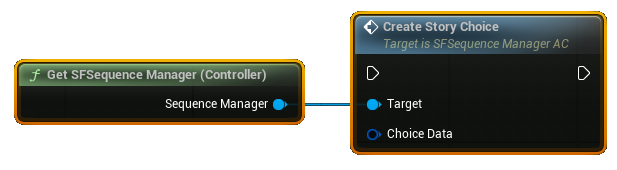
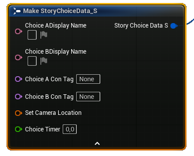
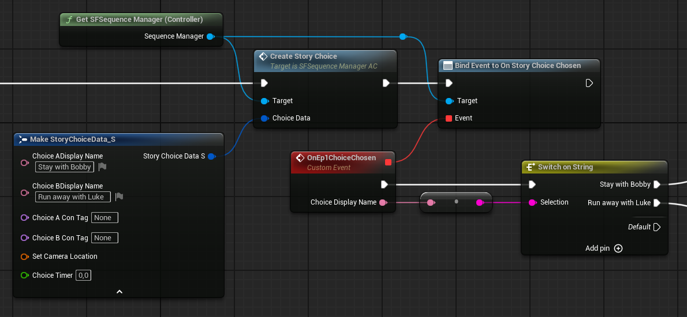
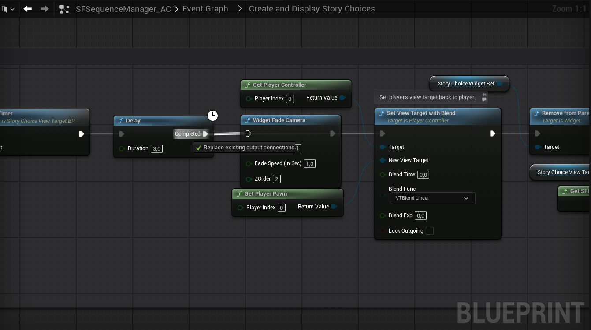

对话、字幕与故事选择
SF 的对话系统由数据表驱动，是整套框架里最“绕”的部分。这一章用一张结构图讲清「NPC → 对话集 → 回复选项 → 字幕」四层关系，并说明剧情标记如何让对话产生分支。
社区里对 SF 的吐槽，八成集中在对话系统上——包括它的作者自己在文档里都只说“看这个视频”。 但它的结构其实很规整：四个层级，全部存在数据表里。看懂层级关系，剩下的就是填表。
四层结构：从“谁在说”到“说了什么”
把 对话集想成剧本里的“一场戏”，把 ReplyOptions 想成这场戏里玩家可以说的台词，
把 Subtitles 想成 NPC 的回应台词。玩家选一句，就跳到下一场戏——
而“跳到哪一场”是靠 SelectOnReply 这个字段指名道姓的。
四个你必须记住的字段
| 字段 | 作用 | 怎么用 |
|---|---|---|
SelectOnReply |
这段对话“因为什么”出现 | 第一段填 {initial}；其余填上一段里某个回复的文本（或标记名） |
ReplyOptions |
这一页显示给玩家的选项 | 每行一句台词；玩家点它 → 寻找 SelectOnReply 匹配的下一段 |
Subtitles |
NPC 说出来的话 | 数组：每行一句 + 停留时长（要自己算时间，一行大约按字数给 1.5–3 秒） |
IsLastReply / RestartConversation |
结束 / 回到开头 | 勾 IsLastReply 结束对话；勾 RestartConversation 每次选完都回到 {initial} |
玩家选了 A 之后进入的那段对话，不会自动继承原来的选项列表。 如果你希望玩家在新页面仍能看到之前的选项，必须在新的对话集里再写一遍。 这一点最容易让新手做出“聊两句就没得聊了”的 NPC。
剧情标记：让对话记住你做过什么
“剧情标记”（Consequential Tag）是 SF 的全局记忆装置：一个字符串，表示“这件事发生过”。 它同时被三个系统共用：
| 用在哪 | 效果 |
|---|---|
| 对话选项 | 带标记的选项只在该标记存在时出现（默认显示为蓝色） |
| 回忆录 | 标记 = 某条回忆的解锁条件 |
| 对话集选择 | 同一个 NPC 可以因为标记不同，进入完全不同的对话集 |
典型用法（Jay 的“骨头”案例）：
- NPC A 有一个选项「你问过 Fred 了吗？」→ 选中后给玩家打标记
AskFred； - NPC B 身上有一段对话，
SelectOnReply为AskFred—— 只有问过 A，B 才会多出这段； - 玩家捡到骨头 → 道具被销毁时打标记
HasBone→ 回到 NPC，他自动切到「你有骨头？」这套对话。
标记的增删都用 Inventory Manager 的 Edit Consequential Tags；对话选项本身也能直接带标记，不需要额外蓝图。
对话图 Actor：把多段对话串成流程
当一个 NPC 的对话超过“一页选项”时，用 Dialogue Graph Actor 在关卡里画节点：
Get NPC → Apply Dialogue → 继续下一段。它本质上是把“对话集”按顺序编排成一条流程。
5.1 更新后有两个实用变化：
- 对话节点不再局限于当前关卡——即使 NPC 不在场上/无效，也能继续推进对话；
- 通过对话节点施加的“回复动作”会自动排序，不需要你手动调整节点顺序。
在对话里触发自定义逻辑
两种做法，各有代价：
| 做法 | 优点 | 缺点 |
|---|---|---|
| On Dialogue Reply + Switch on String | 简单直观，任何蓝图都能用 | 依赖台词的精确文本——改一个标点就失效，也无法做本地化 |
| 给每个回复配唯一标记 / GUID | 稳，可翻译，可复用 | 配置更繁琐，需要维护一张对照表 |
原型阶段用前者，正式内容建议用后者。做法：在选项里勾上剧情标记当作“回复 ID”， 逻辑端判断标记而不是判断文本。
字幕：不只是对话的附属品
字幕系统可以独立使用——旁白、内心独白、环境广播、教程提示都能用它。核心函数都在 Sequence Manager 里：
| 函数 | 用途 |
|---|---|
Play Sound With Subtitles | 播放一段声音 + 同步字幕（声音可留空，只显示文字） |
Play Sound Attached With Subtitles | 声音跟随某个移动的 Actor（5.1 新增，边走边说的对话用它） |
Stop Current Subtitled Sound | 停止当前字幕与声音 |
Add Name to Subtitles | 在字幕上方加“说话人”名字 |
字幕内容是一个数组：每行文本 + 每行停留时间。5.1 起会自动换行、会在游戏暂停时正确暂停， 也会根据画面比例自动调整垂直位置。
想做“走进房间响起内心独白”，直接用 CreateSubtitleArea_BP 触发器，
在细节面板里填文本与时间即可。记得勾上“触发后销毁”，否则玩家来回走会重复播放。
故事选择：给玩家一次“重量级”的决定
Story Choice 是全屏的双选项界面，专门用于“会影响后续剧情”的重大抉择。它和普通对话选项的区别是： 它不在对话里，而是一个独立的演出片段——可以配镜头、可以计时、选择后画面淡出。
调用 Sequence Manager 的 CreateStoryChoice，传入一个 ChoiceData 结构：

Get SFSequence Manager，再接 Create Story Choice。| 字段 | 说明 |
|---|---|
Choice A / B Display Name | 左右两个选项上显示的文字 |
Choice A / B Con Tag | 选了之后给玩家打的剧情标记 |
Set Camera Location | 选择时镜头切到的位置与朝向（做电影感的关键） |
Choice Timer | 倒计时秒数；填 0 = 不限时 |
选择结果用事件 OnStoryChoiceChosen 接收，同样可以用 Switch on String 按选项文字分支。

ChoiceData 展开后的样子：两个显示名、两个剧情标记、镜头位置、倒计时。填完直接接回节点上的 Choice Data 引脚。
Switch on String 匹配选项文字 → 各自的后续逻辑。
这是设计如此：选择后会用 WidgetFadeCamera 把画面淡出到黑，
好让作者自己决定“之后切到哪个镜头”。你需要在后续逻辑里再调一次同一个函数，
把 FadeDirection 设为 -1,0 让画面淡回来；
或者直接在 CreateAndDisplayStoryChoices 这个折叠图表里把淡出逻辑改掉（官方给了改法截图）。

CreateAndDisplayStoryChoices 折叠图表里找到 WidgetFadeCamera，把淡出方向接成淡入，就能“选完直接回到游戏画面”。官方文档说：倒计时结束时，如果玩家正悬停在某个选项上就选它，否则随机选一个； 社区教程则说“默认选 B”。两种说法可能对应不同版本。如果你要严格限定超时结果， 最稳的做法是自己监听计时并显式设置结果，不要依赖默认行为。
Sequence Manager：过场与演出
| 函数 | 用途 |
|---|---|
Play Level Sequence | 播放关卡序列，比原生节点多了些可控参数 |
Stop Current Sequence | 停止由上面函数播放的序列 |
Add Name to Subtitles 等 | 见上一节 |
4.0 起还有一个 SaveAfterCompleted 开关：勾上后，这条序列播过一次就会被记录，
下次不会再播——非常适合“开场动画”“结局动画”这类一次性演出。
新手做对话的推荐流程
- 先复制示例 NPC，不要从零新建。示例里已经把 ID、对话资产、镜头设置都接好了，改台词最快。
- 在纸上画分支：哪个问题引出哪段回答、哪段回答给什么标记。SF 不帮你设计剧情，它只负责执行。
- 先做线性对话（只有
{initial}一段），跑通再接分支。 - 再逐个加标记，每加一个就进游戏验证：标记是否生效、旧选项是否还在、能否正常退出。
- 最后配镜头与字幕时间。字幕时长宁长勿短，玩家读中文比读英文慢。
回复选项可以设 Reply Timer：玩家在限定时间内不选，就自动进入某个预设回复。
这是做“紧迫感对话”的利器（审讯、倒计时威胁），也让玩家的沉默本身成为一种选择。
叙事部分讲完。下一章是你每天都会看到的东西：界面。